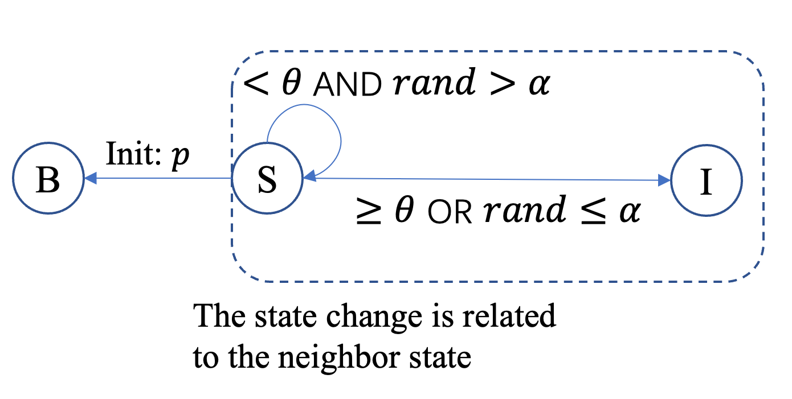

Kertesz Threshold
The Kertesz Threshold [1] model extends the classical Threshold model by introducing two additional mechanisms: spontaneous adoption and node blocking. A fraction of susceptible nodes are randomly designated as Blocked at initialization, permanently preventing their activation. Non-blocked inactive nodes can become active either by spontaneously adopting with a given probability, or through the standard threshold mechanism when sufficient neighbor influence is accumulated.
Model Description
Node transitions follow three rules:
When \(k=0\), a fraction \(p\) (
percentage_blocked) of susceptible (inactive) nodes are randomly designated as Blocked. Blocked nodes can never become active.For \(k>0\), every non-blocked inactive node \(i\) may be activated through one of two mechanisms:
Mechanism 1: Spontaneous adoption. Each non-blocked inactive node \(i\) independently adopts with probability \(\alpha\) (
adopter_rate):Mechanism 2: Threshold-based adoption. Every inactive node \(i\) checks the fraction (or weighted fraction) of its neighbors that are active. If this value exceeds its threshold \(\theta_i\), the node becomes active in the next iteration.
{kind=link}

We use two indicator vectors: \(h, b \in \{0,1\}^N\) to represent node states:
\(h_i=1\) and \(b_i=0\) denotes Active,
\(h_i=0\) and \(b_i=0\) denotes Inactive,
\(h_i=0\) and \(b_i=1\) denotes Blocked.
The update of the system at step \(k\) is decomposed into three stages:
Each active neighbor \(j\) of node \(i\) transmits a contribution
Node \(i\) collects contributions from all neighbors \(N(i)\) to compute its active probability:
The indicator variables are updated with independent uniform random variables \(U_i \sim \mathrm{Uniform}(0,1)\):
Status
During the simulation, each node can be in one of three states:
Status |
Code |
|---|---|
Inactive |
0 |
Active |
1 |
Blocked |
-1 |
KerteszThresholdModel
- class fs_gplib.Epidemics.KerteszThresholdModel(data, seeds, threshold: float, adopter_rate: float, percentage_blocked: float, device='cpu', use_weight: bool = False, rand_seed=None)[source]
Bases:
DiffusionModelKertesz Threshold diffusion model on static graphs.
This model extends the classical Threshold model with two additional mechanisms: spontaneous adoption and blocked nodes. A fraction of initially inactive nodes is marked as blocked and can never activate. Every non-blocked inactive node may then become active either because its neighbor influence reaches its threshold, or because it spontaneously adopts with probability \(\alpha\) at each step. Once activated, a node stays active permanently.
Returned node states are encoded as: -1 = blocked, 0 = inactive, 1 = active.
- Parameters:
data (torch_geometric.data.Data) -- PyTorch Geometric
Dataobject representing graph \(G=(V,E)\). Must containedge_index(the edge set \(E\)) andnum_nodes(\(|V|\)). When use_weight isTrue,edge_attrsupplies per-edge weights.seeds (list[int] | float) -- Nodes whose initial state is Active. Pass a list of node IDs, or a float in (0, 1) to activate that fraction of nodes chosen uniformly at random.
threshold (float) -- Adoption threshold. When
threshold \in (0,1), all nodes share the same threshold value. Whenthreshold == 0, a threshold is sampled independently for each node fromUniform(0,1); for batched Monte-Carlo epochs, thresholds are sampled independently in each epoch.adopter_rate (float) -- Per-step spontaneous adoption probability \(\alpha \in [0,1]\) for each non-blocked inactive node.
percentage_blocked (float) -- Fraction of initially inactive nodes that are randomly designated as blocked and remain permanently inactive.
device (str | int) -- (optional)
'cpu'or a CUDA device index. Defaults to'cpu'.use_weight (bool) -- (optional) If
True, use weighted influence fromdata.edge_attr; otherwise use the mean fraction of active neighbors. Defaults toFalse.rand_seed (int | None) -- (optional) Random seed used when seeds is a float. Defaults to
None.
- run_iteration()[source]
Execute a single simulation step.
The internal
node_statusis updated so that subsequent calls continue from the latest state.- Returns:
Node states after one step, shape
(1, N).- Return type:
torch.Tensor
- run_iterations(times)[source]
Execute times simulation steps sequentially.
The internal
node_statusis updated in-place so that subsequent calls continue from the latest state.- Parameters:
times (int) -- Number of steps to run.
- Returns:
Node states at final step, shape
(1, N).- Return type:
torch.Tensor
- run_epoch(iterations_times)[source]
Run a single Monte-Carlo epoch (one independent realisation).
Node states are re-initialised before the epoch starts.
- Parameters:
iterations_times (int) -- Number of simulation steps per epoch.
- Returns:
Node states at final step of the epoch, shape
(1, N).- Return type:
torch.Tensor
- run_epochs(epochs, iterations_times, batch_size=1)[source]
Run multiple independent Monte-Carlo epochs in batches.
Node states are re-initialised before the run.
- Parameters:
epochs (int) -- Total number of independent realisations.
iterations_times (int) -- Number of simulation steps per epoch.
batch_size (int) -- (optional) Number of epochs processed in parallel per batch. Defaults to
1.
- Returns:
Node states at final step of all epochs, shape
(epochs, N).- Return type:
torch.Tensor